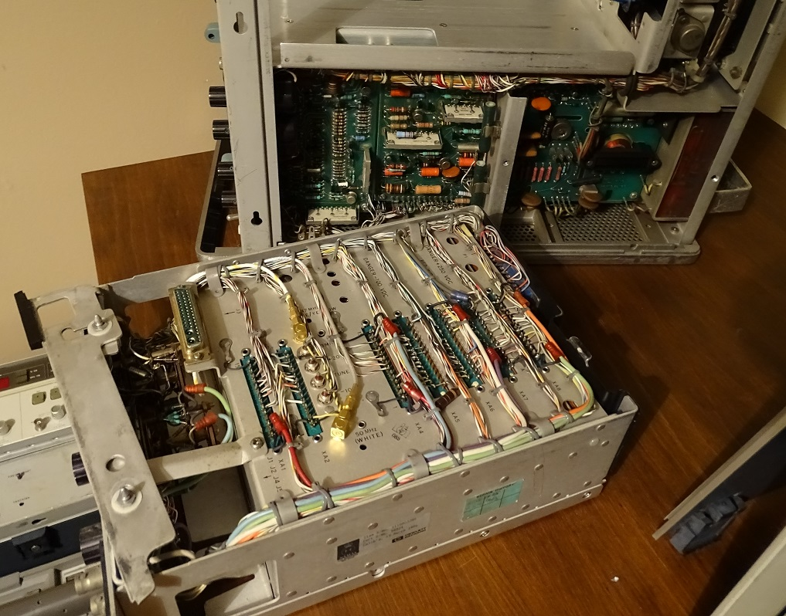

Recently I powered on my HP 141T display section, which contains an HP 8552A IF section and a 8555A RF section. This RF section is something I find really quite amazing, having a input bandwidth between 10 MHz to 18 GHz (which can be extended to 40 GHz with an external mixer). I had hooked the instrument up to my newly acquired HP 8683A, a 2.3 GHz to 6.5 GHz RF source, with the intention of validing the performance after its trip from the US, and the replacement of an exploded RIFA capacitor. However, after I turned on the HP 141T, I noticed the trace was a single point, and smoke began to appear from the instrument. I turned everything off quickly, and so set about determining the cause of this failure. After a thorough visual inspection (figure 1 shows the instrument on my newly constructed lab bench), I discovered only a single instance of damage. This was within the 8555A - this webpage will cover its repair.
Figure 1: Inspection of the HP 141T and HP 8552A returned no obvious visual faults.
Figure 2 shows a top view of the HP 8555A. After inspecting the entire 141T, 8552A and 8555A, the only obvious, visible damage was on the A6 module of the 8555A - component C1 - shown in figure 3.
Figure 2: The HP 8555A unit, note module A6 has been removed in this image. It normally sits towards the rear of the unit.
Figure 3: The HP 8555A A6 module, showing the heavily damaged C1 in the bottom right of the PCB.
From page 6-10 of the HP 8555A service manual [1] C1 was identified as a 2.2uF, 10%, 20VDC tantalum capacitor. The HP manufacturer code of 56289 indicated this was a Sprague Electric Co. component, PN: 150D225X9020A2. A bit of googling, however, suggests these components are metallic in appearance, and clearly the component on my PCB is closer to a gold/orange expoy. The module appears to be as new, so I suspect that maybe HP changed the exact part number for this component, as least from the revision of the manual in [1].
In the end, I settled for substituting C1 with a 173D225X9025VWE3 from Vishay Sprague. This is a 2.2uF, 10% tantalum capacitor, though rated for a slightly higher 25V.
I clipped the damaged capacitor from the PCB, and began gently cleaning the damaged area with isopropyl alcohol. Unfortunately, what I assumed to be the guts of C1 (sprayed over the input choke L1), was actually discolouration of L1 itself. Indeed, such was the heating on L1 (probably over current caused by a shorted C1 - don't you love the shorting failure mode of tantalums?) that it appears that the moulding has split... See figure 4.
Figure 4: The damaged L1 choke on module A6 of the HP 8555A.
L1 turns out to be a 100uH, 5% choke. The HP manufacturer code of 24226 returns Gowanda Electronics Corp., with a manufacturer's PN: 15/103. It appears that Gowanda stills survives in some form today, though I could find no information on PN: 15/103. However, a bit of careful searching of their current component offerings throws up PN: 15M103J, which is quite close to the original PN. The datasheet [2] specs seem to suggest a good match with the original part, at least with regards to inductance and tolerance, but I've still emailed Gowanda asking if they have any further information on the original part - I will update this page with any response.
Of course, my thoughts now turn to what other failures have occured further up and downstream of C1 and L1. From page 8-35 of the 8555A service manual, these components lie on the -12.6V rail from the display unit, and sit on the input of a negative voltage regulator for the logic components on A6. A quick in-circuit multimeter test across CR7 (a 6.81V zener diode) returns about 1.6V - suggesting at least some further damage. I will carefully removed these surrounding components and try to get a -7.0V supply restored on module A6. Fortunately, these parts all seem to be jellybean components, rather than unobtanium.
Upstream of C1 and L1, the -12.6V supply from the 141T display unit is configured to blow a fuse, rather than damage any transistors (page 8-4 of the HP 141T Operating & Service Manual [3]). Nice work HP. :)TBC...
v1.0: 19/06/2023